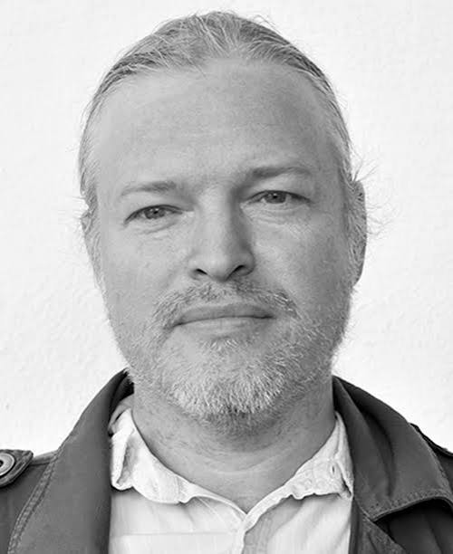
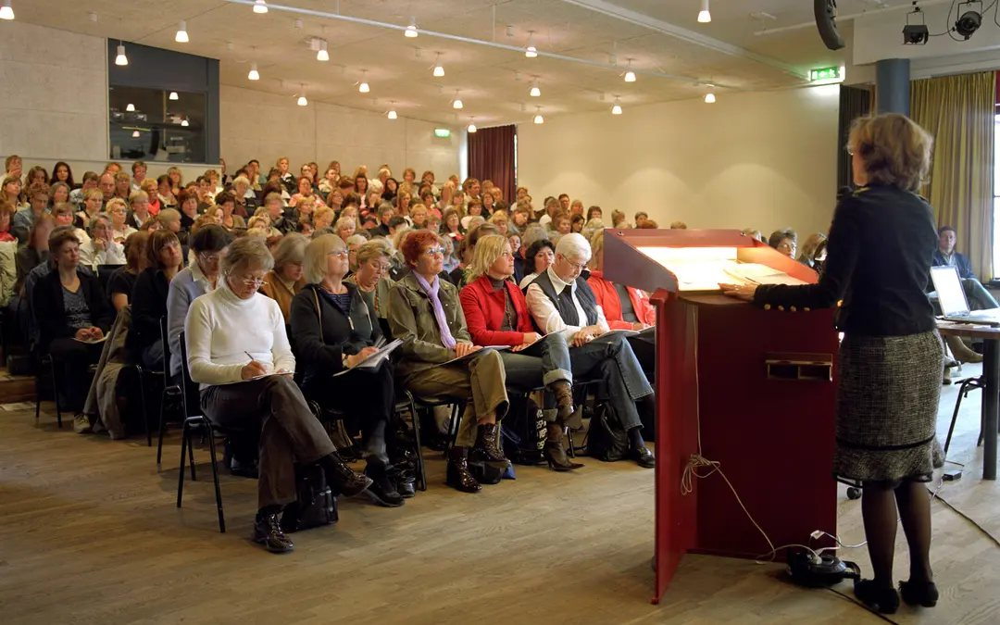
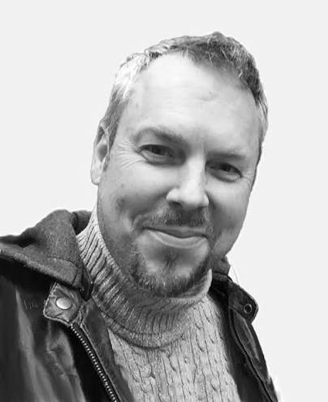

Mattias Karlsson
Fil dr i historisk arkeologi. Arkeolog på Kulturen.
Kulturen i Lund · sedan 2022
En föreläsningsserie som hålls på Kulturen sedan 2022 med målet att främja vetenskaplig forskning och spridning av forskningsresultat med koppling till museets verksamhet. Serien finansieras av Nordenstedtska Stiftelsen och inkluderar både presentationer av museets egen personal och gästföreläsare inom olika ämnesområden.

Program
Den 29 december 1697 skriver två svenska soldater, Oluf Örnvinge och Johan Brant, ett brev från Alger till den svenske kungen. Soldaternas väg till Nordafrika hade börjat nästan tjugo år tidigare, i efterdyningarna av det Skånska kriget. Samtidigt berättar handlingar från Lunds domkapitel om kyrkliga kollekter för landsmän i fångenskap i ”Turkiet” – en samtida beteckning för det Osmanska riket, som Alger formellt tillhörde. Genom sådana spår vidgar föreläsningen bilden av den tidigmoderna världen och lyfter fram en historia om enskilda livsöden, ofrihet och människors vilja att hjälpa andra i nöd.
Joachim Östlund är docent och universitetslektor i historia vid Lunds universitet. Han har bland annat forskat om Sveriges förbindelser med Medelhavsvärlden under tidigmodern tid och är författare till Saltets pris: svenska slavar i Nordafrika och handeln i Medelhavet 1650–1770. Han leder för närvarande forskningsprojektet Scripture and Scholarship: The Swedish Search for Ancient Egypt, 1677–1739, som undersöker hur kunskap om det forntida Egypten formades och diskuterades i stormaktstidens Sverige.
Det blodiga slaget vid Lund har tolkats på olika sätt från det sena 1800-talet till våra dagar. I skandinavismens och nationalismens tidevarv har det varit utgångspunkt för förening mellan brödrafolk, ett manande exempel på manlighet och stridsiver samt en batalj som kontrasterar senare tiders fredliga utveckling.
Ulf Zander är professor i historia vid Lunds universitet och forskar om historiebruk och hur historia förmedlas i offentlighet och populärkultur. Han har särskilt studerat film, fotografi, monument och musik samt minnet av andra världskriget och Förintelsen. Bland hans böcker finns Clio på bio och Raoul Wallenberg – liv och legend.
Med utgångspunkt i sin egen familjehistoria gräver Randi Mossige-Norheim i arkiven och presenterar nu nya detaljer om det institutionella våld som de tvångsintagna patienterna på Vipeholm utsattes för. Kariesexperimentet var långt ifrån det enda experiment där patienter användes som försökspersoner. De intagna reducerades till ”koder” och ”material” och var helt utlämnade till överläkaren Hugo Fröderbergs hemsnickrade teorier om vem som var lågt eller högre stående.
Randi Mossige-Norheim är dokumentärjournalist och har varit verksam på Sveriges Radio sedan 1980-talet. Hon har tidigare gjort en uppmärksammad radiodokumentärserie om Vipeholm för vilken hon fick Stora Journalistpriset 2021. I sin bok När du var idiot (utgiven i september 2026) återvänder hon till Vipeholm, för att försöka förstå vad hennes egen farbror och de andra patienterna var med om där inne på den slutna anstalten.
Slaget vid Lund kan sägas utgöra något av en höjdpunkt i den långa konflikten mellan det danska och svenska riket om dominansen i Norden. Slaget avgjorde inte det Skånska kriget som fortsatte i ytterligare tre år, men den svenska segern möjliggjorde en fortsättning av kriget. Föreläsningen handlar om hur slaget utvecklades med utgångspunkt i samtida källor.
Göran Larsson är en svensk arkivarie, museiman och författare som bland annat varit chef för Malmö Museer och Malmö stadsarkiv. Hans främsta intresseområde är Skånes historia och vid sidan av arkiv- och studenthistoriska skrifter har han även författat böcker om slaget vid Lund.
Vårens program i Nordenstedtska seminariet rör sig från förkristna maktstrukturer till 1600-talets europeiska stormaktspolitik. Vi undersöker hur Norden styrdes innan riken och stat växte fram, följer upptakten till Slaget vid Lützen och fördjupar oss i det Skånska kriget och Slaget vid Lund. Samtidigt granskas hur modern DNA-forskning används i tolkningar av vikingatiden, hur 1800-talets kulturpolitiska reformer formades kring Nils Månsson Mandelgren och hur de skånska spelkvinnornas liv och musik kan spåras i arkiv och tradition. Historia, musik och forskning – levande och angeläget.
Hur fungerade lag och rätt utan stat? Vad hände när den gamla tron mötte kristendomen? I det här föredraget tar Stefan Brink oss till ett samhälle i omvandling – från hedniska maktstrukturer till kyrkans och kungamaktens nya landskap. Föreläsningen blir också en levande inblick i forskningen bakom den kommande boken Viking Landscape – A Spatial (Pre-)History, och i arbetet med att förstå hur det nordiska samhället växte fram.
Stefan Brink är professor i Scandinavian Studies med anknytning till Cambridge University, University of the Highlands and Islands och Uppsala universitet. Under 20 år var han Sixth Century Professor och föreståndare för Centre for Scandinavian Studies vid University of Aberdeen. Han är ledamot av Kungl. Vitterhetsakademien, Kungl. Gustav Adolfs Akademien, Royal Society of Edinburgh och Royal Historical Society samt har varit gästprofessor vid bl.a. Princeton, Harvard, UCLA, Durham, Bergen, Århus och Bonn.
Slaget vid Lützen den 6 november 1632 är ett av de mest mytomspunna och omtalade slagen i svensk historia. Här hade Sverige blandat sig i det europeiska krig, som senare kom att kallas för 30-åriga kriget. Den svenske kungen Gustav II Adolf ledde de protestantiska styrkorna och stod emot den katolska kejserliga armén under ledning av Albrecht von Wallenstein. Slaget blev historiskt och avgörande, inte minst med tanke på att den svenske kungen dödades under slaget. Men hur betydelsefull var egentligen denna drabbning? Vad hände under slaget och varför var Sverige ens med i detta krig? Vad var det strategiska syftet och målsättningen från svensk sida?
Johan Romin är militärhistoriker och journalist, verksam på Kulturen i Lund, bland annat som producent och programledare för podden Historielunden. Han har examen i militärhistoria från Försvarshögskolan och skriver just nu på sin tredje bok i ämnet krig och konflikt.
Fanns det några spelkvinnor i Skåne förr i tiden? Den frågan besvaras med musik, sång och berättande av två nutida spelkvinnor, som har forskat kring kvinnor i folkmusiktraditionen och hittat många spännande livsöden i bland annat Kulturens samlingar.
Riksspelmännen Miriam Andersén och Anna Rynefors startade sitt musikaliska samarbete Kvinnolåt år 2015 med syftet att synliggöra kvinnliga musiker, komponister och poeter från medeltiden och framåt. Båda är framgångsrika frilansmusiker med världen som arbetsfält och bosatta i Skåne.
Skånska kriget var ett av de hårdaste och mest brutala krig som drabbade Sverige och Danmark – fyllt av övergrepp, snapphanar, gömda skatter, ond bråd död och mänskligt lidande. Men mitt i mörkret fanns också en annan möjlighet. Med freden i Lund öppnades vägen mot något ljusare: försoning, samförstånd och en framtid där gamla fiender kunde börja närma sig varandra.
Katarina Harrison Lindbergh är historiker och föreläsare med ett tiotal böcker bakom sig. Hon har framförallt skrivit om 1500-talet och 1600-talet i böcker som Erik XIV och Skånska kriget 1675–1679. Hon har också skrivit flera böcker om nordiska guda- och hjältesagor. Tillsammans med maken Dick Harrison poddar hon i Harrisons dramatiska historia.
The lecture takes Islay in the Inner Hebrides as a case study in how scholars reconstruct the Viking past. While earlier accounts drew on National Romantic literature, more recent studies have looked for evidence in the DNA of present-day populations believed to have Viking ancestry. MacNiven considers what genetic evidence can contribute and where statistical errors or claims that go beyond the data can lead historians astray. He asks when DNA helps us understand the past and when the apparent precision of genetic analysis makes an uncertain interpretation seem more convincing than it is.
Alan MacNiven is Senior Lecturer and Head of Scandinavian Studies at the University of Edinburgh, where he teaches on a range of courses covering the language, literature and culture of modern and medieval Scandinavia. He is particularly interested in areas where aspects of Nordic history and culture intersect with those of Scotland. Alan’s research has focused on the identification, interpretation and implications of the evidence for Viking activity in Scotia Scandinavica.
Nils Månsson Mandelgren är mest känd för att ha dokumenterat äldre folklig kultur. Föreläsningen handlar om hans arbete för att påverka hur Sveriges kulturinstitutioner skulle utvecklas. Med utgångspunkt i en bok där tolv forskare medverkar tar Söderlind upp hans betydelse för museerna, kulturminnesvården och utbildningen inom konst och hantverk. Hon lyfter också fram hans förslag på hur människors levnadsvillkor kunde förbättras och det starka engagemang som drev honom att föra fram dem.
Solfrid Söderlind är professor emerita vid Institutionen för kulturvetenskaper på Lunds universitet. Hon har tidigare varit överintendent för Nationalmuseum och tillsammans med etnologen Karin Gustavsson redaktör för boken Nils Månsson Mandelgren och kampen för kulturens framtid (2025).
Planeringsarbetet pågår för fullt och vi kommer snart att publicera vårens program. Anmäl dig gärna till nyhetsbrevet så får du veta när det är klart.
Under tiden kan du läsa om tidigare föreläsningar i föreläsningsarkivet.
Praktiskt
Föreläsningarna är öppna för allmänheten. Åhörare betalar inte entréavgift, deltagandet är kostnadsfritt. Ingen anmälan krävs. Däremot är antalet platser begränsat, så var gärna på plats 15–20 minuter före start.
Hjärtligt välkommen!
Föreläsningarna äger rum kl. 18–19 i Auditoriet på Kulturen vid särskilda dagar under året (se programmet). Varje föreläsning är cirka 45–50 minuter lång och avslutas med frågestund.
Våra föreläsare avgör själva ifall de tillhandahåller åhörarkopior eller ej, Kulturen tillhandahåller inget material. Vi har begränsat antal platser, så kom gärna 15–20 minuter före start.
Fyll i din e-postadress så får du information om framtida föreläsningar. Det är kostnadsfritt.
Tidigare föreläsare
Alla föreläsningar sedan starten 2022 – 51 stycken – med beskrivningar och presentationer av föreläsarna. Välj ett år, eller sök i hela arkivet.
Historia och syfte
Kulturen bedriver forskning med relevans för museets verksamhet. För att stödja och sprida detta har Nordenstedtska seminariet inrättats (2022), en serie öppna, kostnadsfria och fristående föreläsningar som genomförs kvällstid kl. 18–19 vid tio tillfällen under året.
Nordenstedtska seminariet erbjuder på så sätt en plattform där Kulturens doktorander, disputerad personal samt inbjudna forskare och experter presenterar aktuella arbeten och forskningsresultat av betydelse för museets inriktning och samlingar.
Stiftelsen, som ursprungligen hette Kulturens Toppeladugård, Nordenstedtska stiftelsen, grundades 1953 genom gåvor av advokat Rolf Nordenstedt (1884–1964) och hans maka Karin Nordenstedt (1890–1984).
Att gynna vetenskaplig forskning och spridning av forskningsresultat inom de ämneskretsar som omfattas av Kulturens verksamhet samt att bereda museimän och andra vetenskapliga tillfälle att i lokaler inom Kulturens område i Lund mötas för vetenskapliga överläggningar.
Kontakt
Seminariet arrangeras av Kulturen under ledning av Mattias Karlsson och Johan Hofvendahl. Du når oss på följande sätt:

Fil dr i historisk arkeologi. Arkeolog på Kulturen.

Fil dr i språk och kultur. Forskningssamordnare på Kulturen.